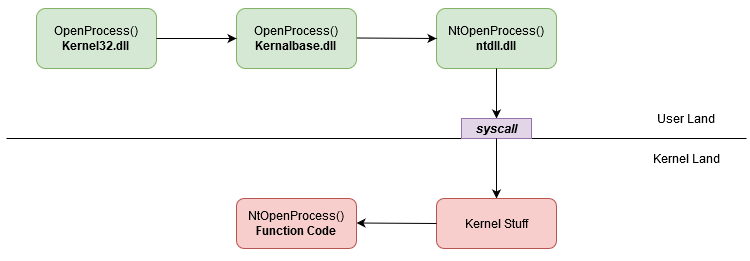
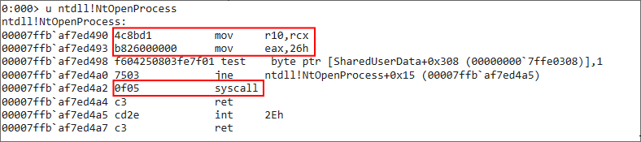
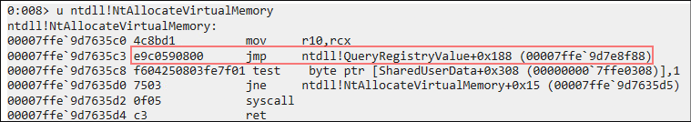
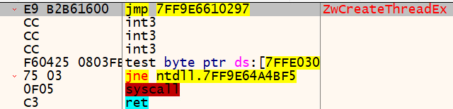
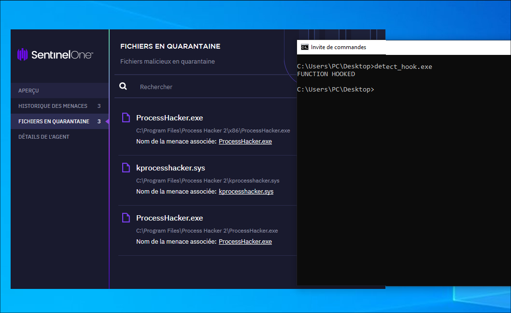
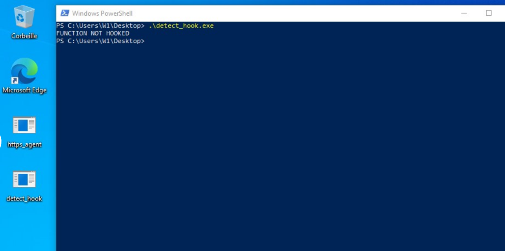

This technique is specific to Windows, and involves the detection of hooks on Windows API functions by security solutions.
A hook is a piece of code inserted at the beginning of a function normally used in a dynamic library, in order to steal its execution flow. This small feature is used by security solutions, notably EDRs, to monitor calls to these functions and detect their malicious use.
On Windows, EDRs generally place their hooks on "ntdll.dll" functions, as this is the dynamic library responsible for interfacing with all Windows system calls.
Here's a diagram of all the functions executed behind the Windows API "OpenProcess" function call, by Alice Climent-Pommeret:

So, in this execution chain, it's the "NtOpenProcess" function that's hooked by the EDRs.
If we disassemble the function with WinDgb on a system without EDRs, we observe the following:

If you've just completed the course on direct system calls, you'll be familiar with this instruction set. Here we see syscall number 38 (26h).
Now, let's take a look at some examples of what the assembly instructions for a function in "ntdll.dll" look like with an EDR:
 
Here are two examples of the contents of a function hooked by an EDR. You can see the appearance of a "jmp" instruction to code belonging to the EDR.
We can see that the hooking techniques are not necessarily exactly the same, but the paterne we find is that it rewrites over the two instructions "mov R10, rcx" and "mov eax, XX".
So, we're going to rely on the presence of these two instructions without them being corrupted to determine whether the function is hooked or not.
In our example, we'll check whether the "NtOpenProcess" function is hooked:
# src/main.rs
use anyhow::{bail, Result};
use std::ptr;
use windows::{
core::s,
Win32::System::LibraryLoader::{GetModuleHandleA, GetProcAddress},
};
static VALID_STUB: [u8; 4] = [76, 139, 209, 184]; // mov r10, rcx; mov eax, XX
fn main() -> Result<()> {
unsafe {
let handle = GetModuleHandleA(s!("ntdll.dll"))?;
let stub = match GetProcAddress(handle, s!("NtOpenProcesss")) {
Some(a) => ptr::read(a as *const [u8; 4]),
None => bail!("Function not in module."),
};
if stub != VALID_STUB {
println!("FUNCTION HOOKED");
} else {
println!("FUNCTION NOT HOOKED");
}
}
Ok(())
}
Here, we start by defining the list of opcodes representing the start of the "uncorrupted" functions.
Next, we use the "GetModuleHandleA" and "GetProcAddress" functions to retrieve the address of the "NtOpenProcess" function.
From this function address, we'll read the first four bytes and store them in our "stub" variable, converting the function pointer into a byte pointer.
Then all we have to do is compare our stub with our witness variable containing the valid bytes, to determine whether the function is hooked or not.
 
You now have all you need to dynamically determine whether a function is hooked. Several implementations of this technique involve iterating over all the functions in the "Export Address Table" of the "ntdll.dll" to enumerate all hooked functions.
For your malware, I advise you to check the functions you intend to use in advance, then if they are being monitored, you can opt for direct system calls or unhooking techniques, which unfortunately we won't be looking at in this course.